Gene Foley
This is a photo of me and my Flexi 2 taking off the ridge above Bishop Ca. 5/29/76. Skied out above the Palisades, over 14,000ft. Wow! Big ass thermal! With Rene Angelot. Flew both Gunther ridge and Coyote Ridge. Got above the Whites. A Flexi 2 is a Standard with a shortened keel and a couple of battens. Divergent. The trick is to keep repeating the mantra, "If in doubt - push out". It works apparently. Now the mantra is "If in doubt - pull in." How the times have changed!
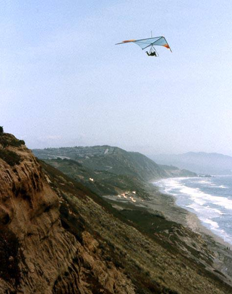
Gene Foley
View of the distant training slope and the knob. You can see the slope below the present takeoff. You could ride a motorcycle down it. Wouldn't try it now unless I was 18 years old. See if I could hit the water!
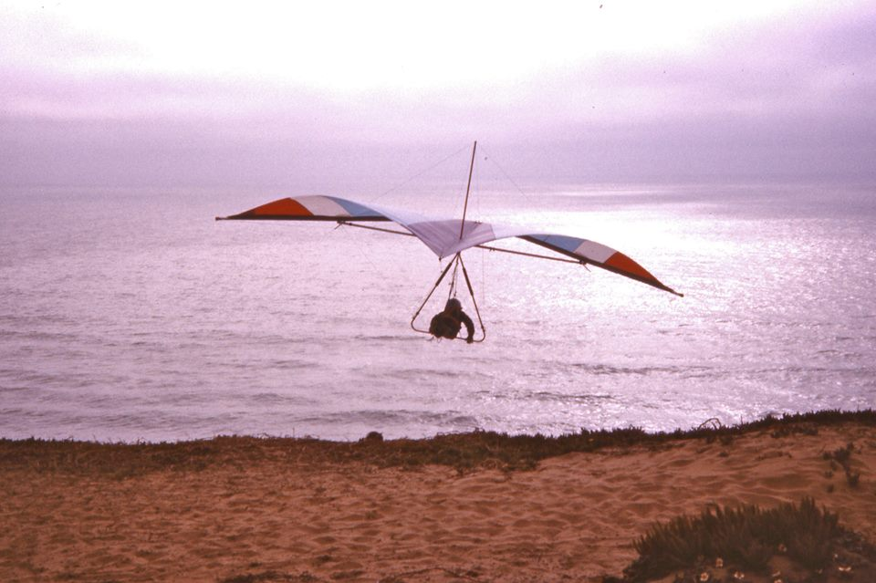
Gene Foley
Lee Sterios
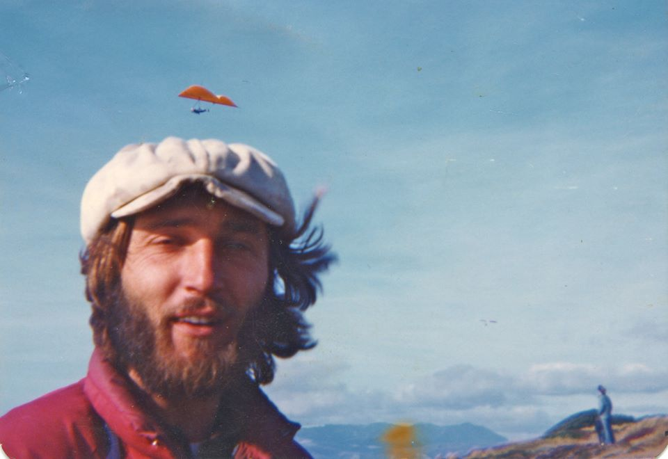 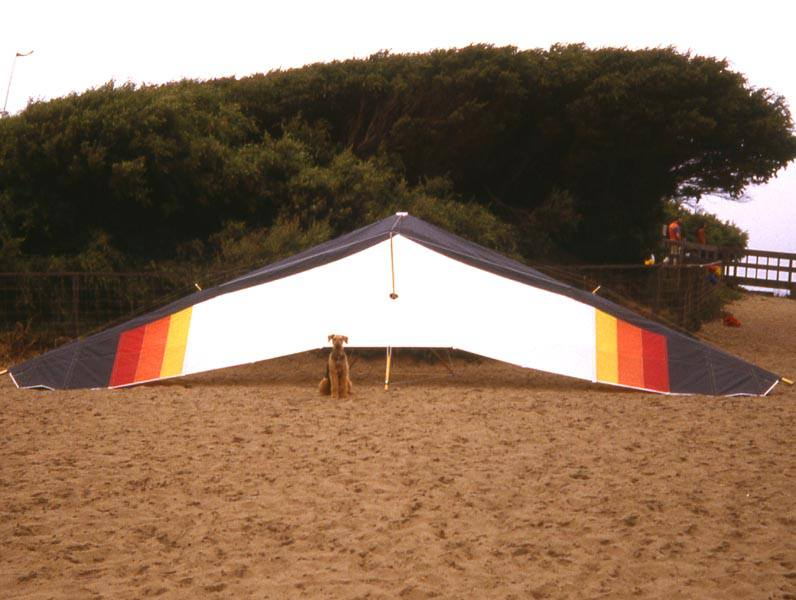
Gene Foley
Nice picture of my Hyster and my dog. Good glider. Super dog!! And look! I am almost as young as Tom Low.
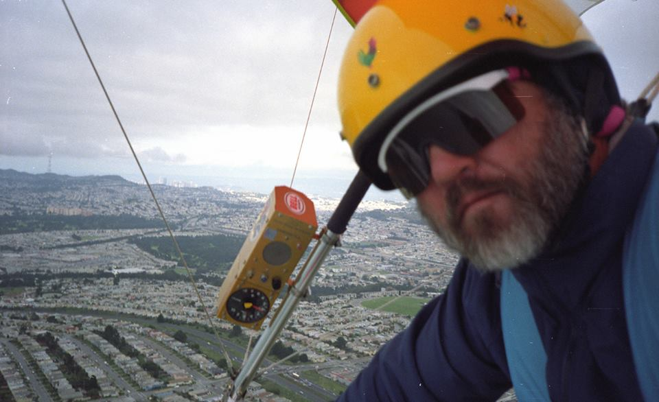
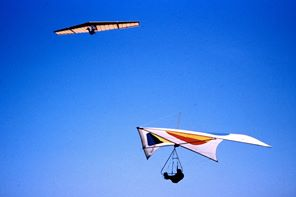
Rene Angelot, seen here flying with Patmont was my mentor.
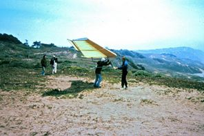
I bought my standard in Yosemite. I was inspired by Lloyd Price, a Yosemite legend seen here launching Steve Patmont.
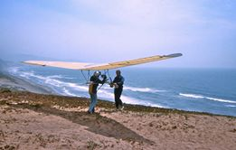
That is again Lloyd Price and Steve Patmont. Steve smashed the thing on Sentinal Dome in Yosemite. Epic disaster!
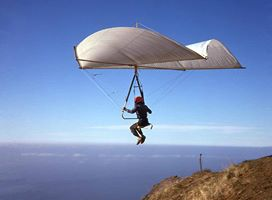 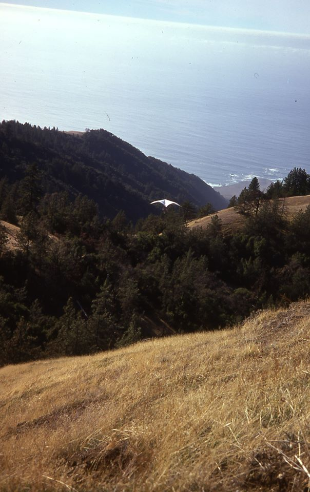
This is me at Big Sur after two weeks at the training slope. Basically self taught, taught by a fool. Look at that glide! 3/1? Landed in a herd of stampeding cattle. Pretty exciting!
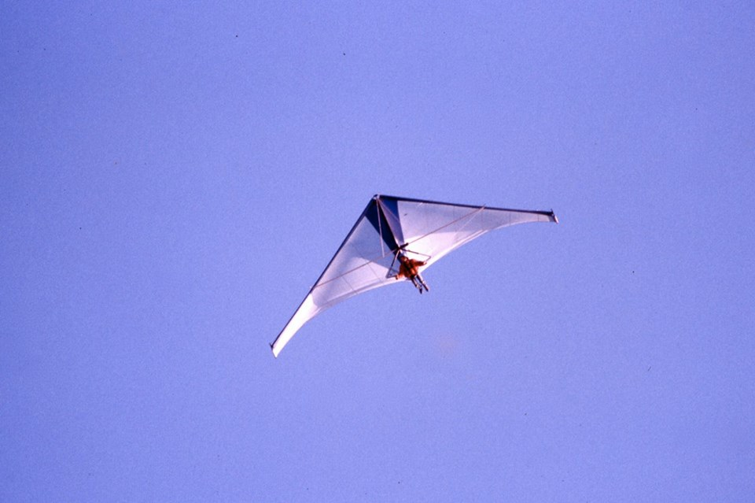 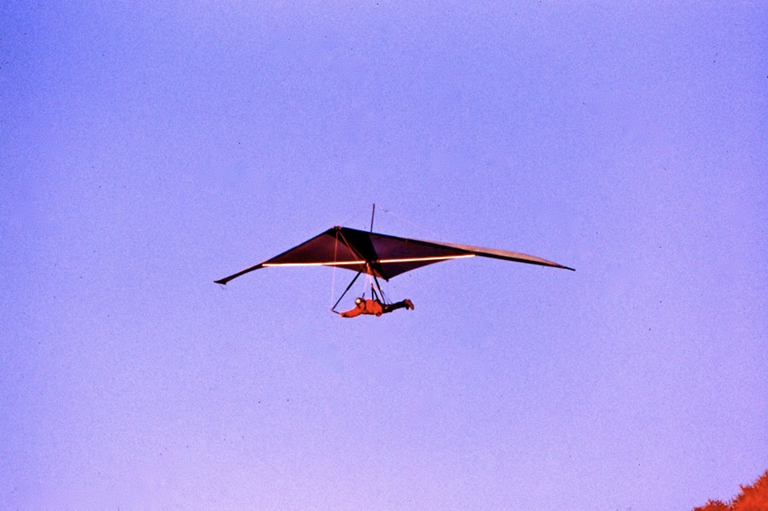
Phil Ray and his Dinger Wing. Big glider!
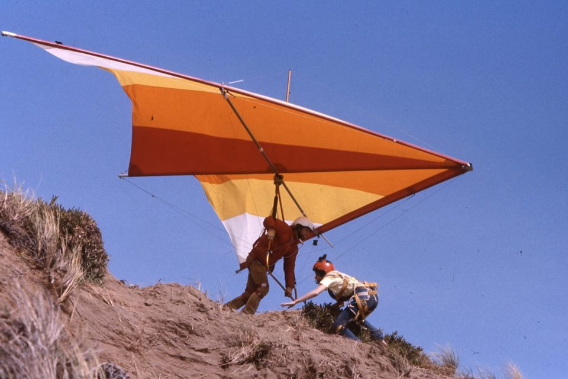
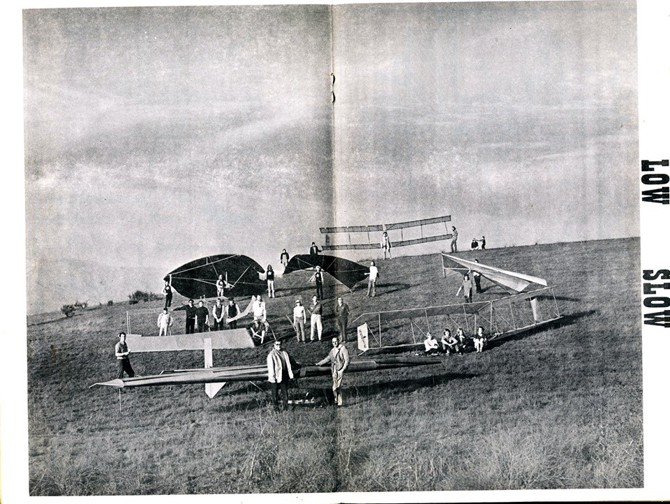